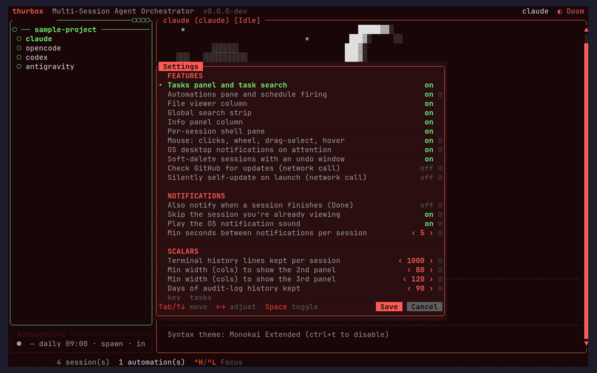
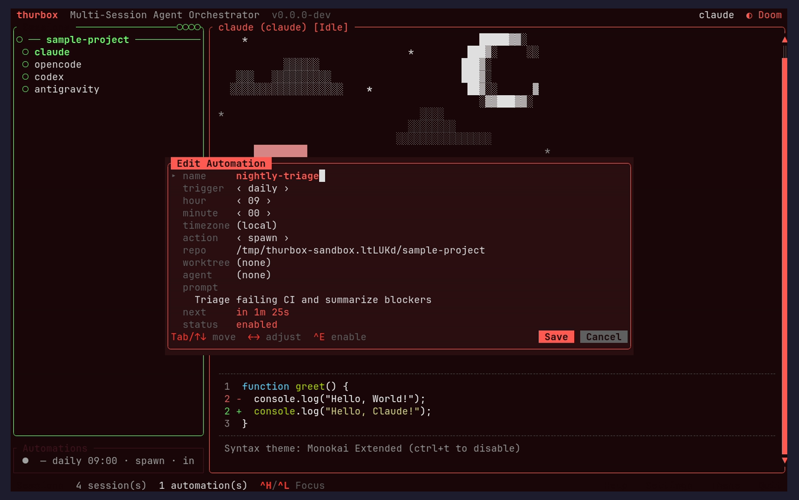
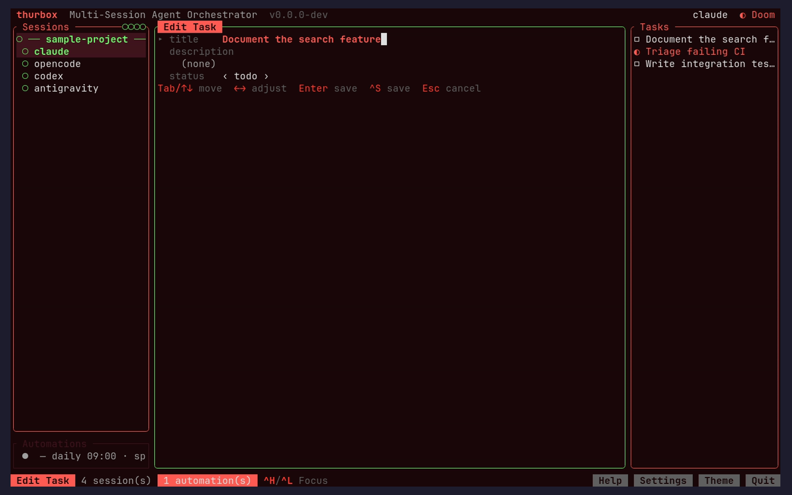

thurbox TUI — UI/UX Review
This page is generated by the ui-review skill: it drives the
real TUI in an isolated sandbox, screenshots every screen, and critiques
each through four lenses — visual design, usability, consistency, and
accessibility. Re-run the skill to refresh it.
Summary — 16 findings across 13 screens
1 blocker1 warning14 nits4 visual6 usability3 consistency3 accessibility
Top recommendations
- RESOLVED (shipped in v0.145.3) — Search-highlight crash: global search used to panic the whole TUI (src/ui/highlight.rs) when a row label was truncated with a multi-byte '…' and a match offset landed inside that char. A char-boundary guard + regression test fixed it; this capture confirms search now highlights truncated rows (e.g. 'Write integration tes…') without crashing. This was the only blocker found.
- Panel toggles (file viewer / info / tasks / automations) do nothing when a session terminal is focused — they are intentionally forwarded to the agent CLI for readline compatibility. This is correct by design but is a first-use discoverability gap; consider surfacing the F-key alternates (F2/F3/F5) in the footer.
- Minor polish only: the info panel wraps long values in the narrow left column, and a few editor modals can truncate long absolute repo paths. Everything else reviewed is consistent and well-built.
- Reviewer's note: the first capture pass produced misleading findings because the screenshots were downscaled to illegibility. The capture resolution was lowered to render 1:1, and several 'issues' (modal placement, theme picker wording, file dir/file markers) did not survive inspection of the actual code and were removed.
Session list + terminal (default view) launch

warning
Panel chords are inert from the launch (terminal) focususability
The TUI launches with the agent terminal focused. Ctrl+B/E/W/P are terminal-passthrough (so readline chords reach the agent), so pressing them here forwards to the CLI rather than toggling thurbox panels — a new user sees nothing happen. This is intentional, documented behaviour, not a bug.
Fix: Surface the F-key alternates (F2 info, F3 file viewer, F5 tasks) in the footer, or show a one-time hint that panel toggles live on the session list.
nit
Session status uses shape + colour (good)accessibility
Repo groups show a rollup status dot and each session a status glyph; the working/blocked/done/idle states use distinct shapes (spinner/◆/●/○) in addition to colour, so status survives colour-blindness.
Fix: No change needed — noted as a strength.
A different session selected Ctrl+J

nit
Selection + status badge stay in syncconsistency
Switching sessions moves the solid-fill row highlight and updates the top-right status badge together; the selected name remains legible on the accent fill.
Fix: No change needed.
Session info panel Ctrl+B (from session list)

nit
Long values wrap in the narrow left columnvisual
The info panel stacks under the session list in the left column, so a long value like 'not logged in (no subscription token)' wraps across lines. It is readable but slightly ragged.
Fix: Optionally abbreviate the value or right-align values; not urgent — density is otherwise good (Name/Status/Agent/Repo, Usage, System CPU+RAM gauges, Automations countdown).
File viewer (repo tree) Ctrl+E (from session list)

nit
Directory markers + consistent hint rowconsistency
Directories carry ▸/▾ expand markers (or nerd-font folder/file icons) so the tree structure reads at a glance, and the footer hint row (j/k Nav · h/l Collapse/Expand · Open · Search · Next/Prev) matches the other panes.
Fix: No change needed.
Tasks panel (todo list) Ctrl+W (from session list)

nit
Empty-state copy teaches the keyusability
The detail pane shows 'No description — press e to add notes.', explaining the empty state and the relevant key in one line.
Fix: No change needed — a pattern worth reusing elsewhere.
nit
Task status carries shape + colouraccessibility
Todo/in-progress/done use distinct glyphs (☐/◐/☑) plus colour.
Fix: No change needed.
Automations list Ctrl+P (from session list)

nit
Schedule summary is scannableusability
'nightly-triage · Daily 09:00 · spawn · in 10h…' packs name, cadence, action type, and next-run into one line; the modal is centered like the others.
Fix: No change needed.
Global search strip Ctrl+/ (Ctrl+A in this capture) + query

blocker
Search-highlight panic on truncated labels (RESOLVED, v0.145.3)usability
Typing a query that matched a row whose label is truncated with a multi-byte '…' used to crash the entire TUI: src/ui/highlight.rs sliced the string at a byte offset inside the ellipsis ('start byte index N is not a char boundary'). It surfaced here because the tasks panel truncates rows like 'Write integration tes…'.
Fix: Shipped in v0.145.3: segments() now skips any match offset that isn't a char boundary of the (possibly truncated) text, with a regression test. This capture confirms search highlights truncated rows without crashing.
nit
Match highlight isn't colour-onlyaccessibility
Matched characters use underline + bold in addition to the accent colour, and per-scope counts ('2 tasks · 1 file [1/3]') plus a live task-detail preview give strong feedback.
Fix: No change needed — a model interaction.
Theme picker Ctrl+Y

nit
Live palette preview is genuinely usefulvisual
The picker shows a live swatch (Accent, Status glyphs, Border, Modal bg) and the theme id for the highlighted entry, centered like the other modals.
Fix: No change needed. (An earlier draft of this review claimed a '1/9 candidate' label and off-center placement; neither exists in the code — they were artifacts of a downscaled screenshot.)
New-session / repo picker Ctrl+N

nit
Clear empty state with next actionusability
'No bookmarks — add via path input below' explains the empty list and points at the input; the footer enumerates the available keys.
Fix: No change needed; the single-line hint row could wrap/abbreviate on very narrow terminals.
Keybindings help + editor Ctrl+G / F1

nit
Comprehensive, sectioned, scrollableusability
Bindings are grouped (Navigation / Sessions / Project / UI) with a scrollbar and a clear selected row, supporting the live-rebind workflow.
Fix: No change needed; slightly heavier section headers would speed scanning.
Settings panel Ctrl+, / F6 (Ctrl+X in this capture)

nit
Well-grouped with an aligned value columnvisual
FEATURES / NOTIFICATIONS / SCALARS sections with a right-aligned value column and on/off text make the panel easy to scan.
Fix: No change needed; the restart-required marker could be a touch more prominent.
Automation editor (multi-line prompt) Ctrl+P then Enter

nit
Multi-line prompt renders inline; consistent footervisual
The multi-line/wrapping prompt field shows its content within the field, and the footer carries Save/Cancel pills consistent with the other editors.
Fix: No change needed; a long absolute repo path can fill the value column — middle-truncating it would keep the repo leaf visible.
Task editor (in-pane) Ctrl+W then Enter

nit
Editor vocabulary matches the automation editorconsistency
Field navigation and footer hints (Tab/↑↓ move · ←→ adjust · Enter/^S save · Esc cancel) mirror the automation editor, and the ‹ todo › status stepper matches the Settings scalars.
Fix: No change needed.